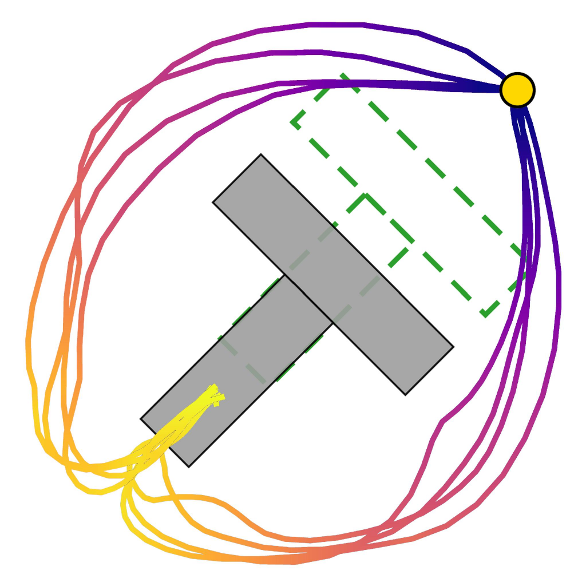
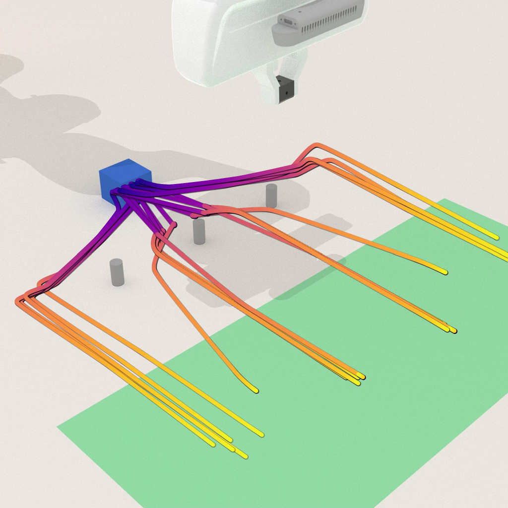
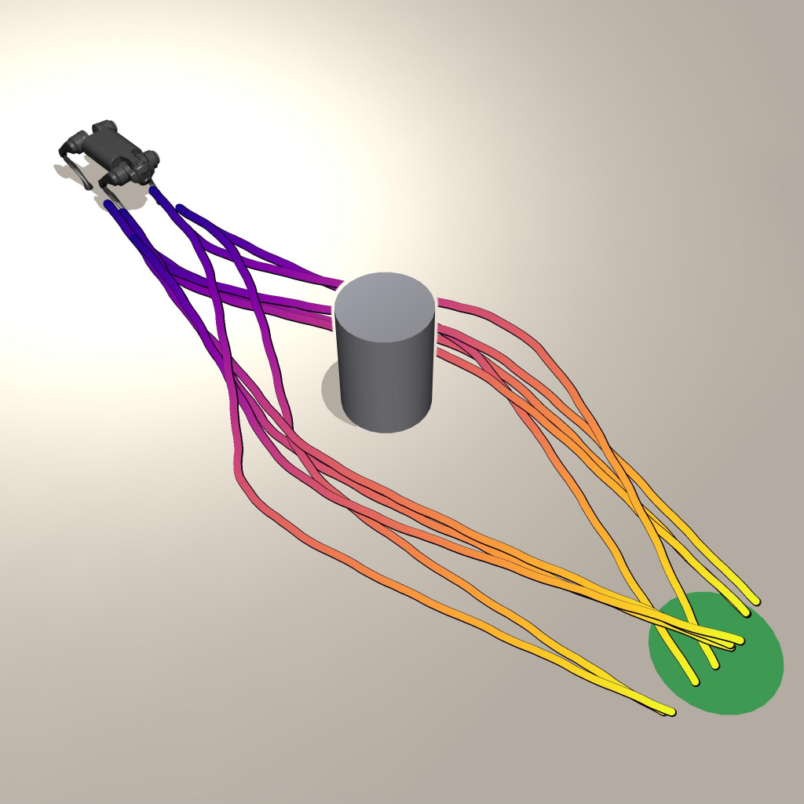

Knife handover
Redirect toward the deployment-safe handover mode.
Distilling Mode Redirection into Policy Weights without Inference-Time Steering
MoRE edits a mixed-mode behavior-cloned policy into a standalone desired-mode policy. The temporary classifier is used only during editing; deployment keeps the original policy inference path.
Redirect toward the deployment-safe handover mode.
Preserve one or multiple acceptable placement modes.
Suppress undesired routes while preserving task completion.
Edit mode choice without adding an inference-time module.
Behavior-cloned policies often learn multiple behavior modes from demonstration datasets, including modes that are unsafe or otherwise undesired at deployment. Standard remedies such as data curation and inference-time steering either require access to the original demonstrations for full retraining or add substantial inference-time overhead.
MoRE redirects policy rollouts toward desired behavior modes through a short uncloning step. It trains a temporary behavior-mode classifier, backpropagates a classifier-guided redirection loss into the policy weights, balances the edit with a retain loss on desired samples, and then discards the classifier. Across simulated and real-world tasks, MoRE improves deployment success while preserving the original inference speed.
percentage-point average SR improvement over the original mixed policy.
simulated and real-world tasks across manipulation and navigation.
editing gradient steps per target setting in the reported experiments.
extra inference-time steering overhead after the policy edit.
MoRE treats behavior mode control as a policy editing problem. It uses mode-labeled examples to learn where the original policy's rollouts point, then distills the desired redirection into the policy weights.
Fit a K-way classifier on cached features from the original mixed policy.
Push classifier probability mass toward the desired mode set using differentiable policy features.
Keep the original behavior-cloning loss on desired-mode samples and deploy the edited policy alone.
We evaluate on four real-robot tasks with a Franka Research 3 arm. MoRE shifts rollouts toward requested behavior modes while preserving task competence.
| Task | Mode change | Original SR / TCR | MoRE SR / TCR |
|---|---|---|---|
| Place-Knife | 2 → 1 | 40.0 / 80.0 | 80.0 / 80.0 |
| Place-Bottle | 3 → 1 | 31.7 / 95.0 | 96.7 / 96.7 |
| Block-Obstacle | 2 → 1 | 47.5 / 95.0 | 92.5 / 92.5 |
| Knife-Handover (VLA) | 2 → 1 | 45.0 / 90.0 | 70.0 / 85.0 |
MoRE improves deployment success rate across Diffusion Policy benchmarks and approaches filtered-data retraining, while CPL and inference-time guidance baselines only partially shift modes.

SR: 50.0 → 98.3

SR: 37.0 → 80.7

SR: 21.5 → 72.3

SR: 50.0 → 84.3
The full supplementary video is included below with metadata preload so the page stays lightweight until playback.
The repository contains the method-defining MoRE losses, classifier utilities, a policy-agnostic trainer skeleton, a Diffusion Policy feature path, tests, and a minimal synthetic example.